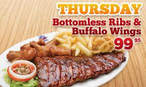
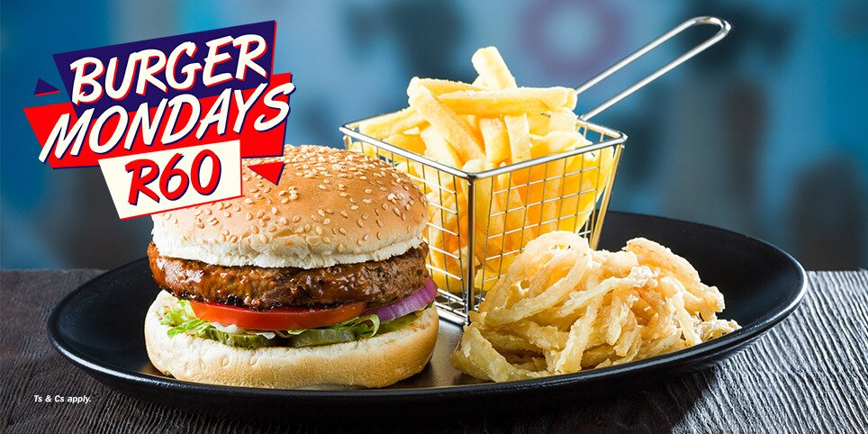
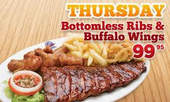
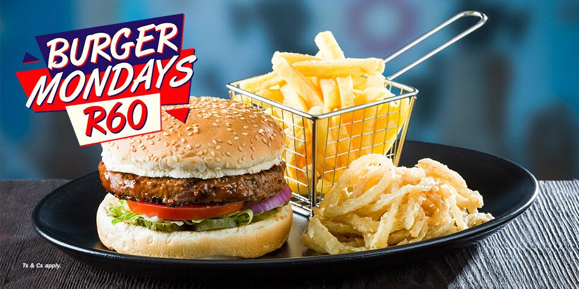

Description:
For over 40 years, Spur Steak Ranches have been part of the South African family. It all began in 1967, when founder and executive chairman, Allen Ambor, invested R4000 to open the Golden Spur in Newlands, Cape Town. It fast developed a reputation for tasty, nutritious, value-for-money meals. (A Spur burger cost just 40 cents in those days.) From these early beginnings, Spur has grown into an internationally recognised brand with over 237 local and 28 international restaurants. You’ll even find a Spur in the United Kingdom, Australia and Mauritius. So what’s our winning recipe? Well, we start with a warm, relaxed, family-friendly environment. We add generous portions of great tasting food, and a hearty helping of quality. Then all we need is you!
Details:
Food
Contact:
Phone:(031) 904 2491